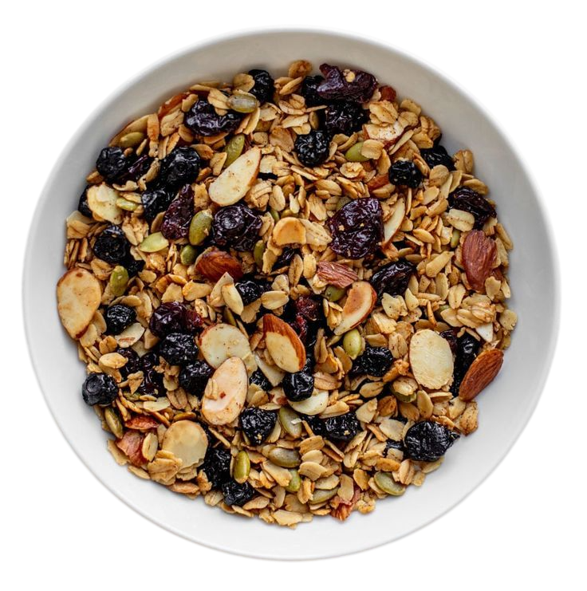

Granola Casera Baja en Azúcar
Prepara tu propia granola en casa: crujiente, llena de fibra y con el control total sobre los ingredientes. Perfecta para el desayuno o un snack energético.
⏱️ Tiempo total: 40 min
🍴 Porciones: 12
💪 Dificultad: Fácil

Ingredientes
- 3 tazas de avena tradicional (no instantánea).
- 1 taza de frutos secos mixtos (almendras, nueces, pecana), picados.
- 1/2 taza de semillas (chía, lino, calabaza).
- 1/4 taza de aceite de coco derretido.
- 1/4 taza de miel o jarabe de arce (maple) para endulzar.
- 1 cucharadita de extracto de vainilla.
- 1/2 cucharadita de canela en polvo.
- 1/2 cucharadita de sal.
- 1/2 taza de frutas deshidratadas (pasas, arándanos) (opcional, añadir al final).
Preparación
- Paso 1: Mezclar Secos. Precalienta el horno a 150 grados. En un tazón grande, mezcla la avena, los frutos secos, las semillas, la canela y la sal.
- Paso 2: Mezclar Húmedos. En un tazón pequeño, combina el aceite de coco derretido, la miel (o jarabe) y la vainilla.
- Paso 3: Combinar y Tostar. Vierte los ingredientes líquidos sobre los secos y mezcla bien con una espátula hasta que todos los ingredientes estén húmedos. Extiende la mezcla en una capa uniforme sobre una bandeja para hornear cubierta con papel.
- Paso 4: Hornear. Hornea por 30 a 35 minutos. Revuelve la granola cada 10-15 minutos para asegurar un tostado uniforme. La granola debe estar dorada y crujiente.
- Paso 5: Enfriar y Terminar. Retira del horno y deja enfriar completamente en la bandeja. Este paso es clave para que quede crujiente. Una vez fría, añade las frutas deshidratadas. Guarda en un recipiente hermético.